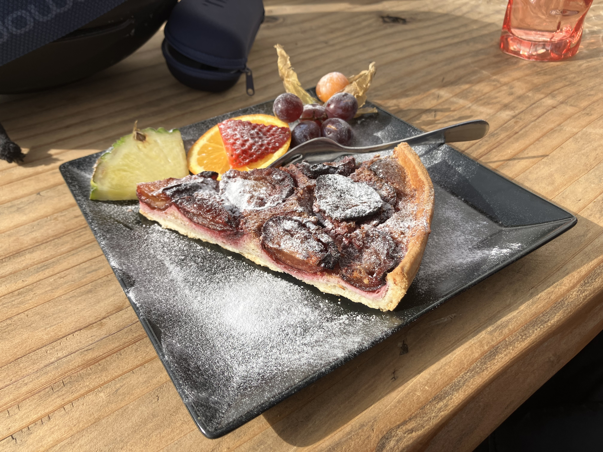

Zwetschgenkuchen
★
★
★
★
★

Zutaten:
- 500g Zwetschgen (halbiert und entsteint)
- 250g Mehl
- 100g Zucker
- 100g Butter
- 2 Eier
- 1 Päckchen Vanillezucker
- 1 TL Backpulver
- 1 Prise Salz
Zubereitung:
- Backofen auf 180°C vorheizen.
- Butter, Zucker, Vanillezucker und Eier schaumig rühren.
- Mehl, Backpulver und Salz mischen und unterrühren.
- Teig in eine gefettete Springform geben.
- Zwetschgen dachziegelartig darauf verteilen.
- Ca. 40 Minuten backen, bis der Kuchen goldbraun ist. Optional mit Puderzucker bestäuben und mit Früchten servieren.
Guten Appetit!